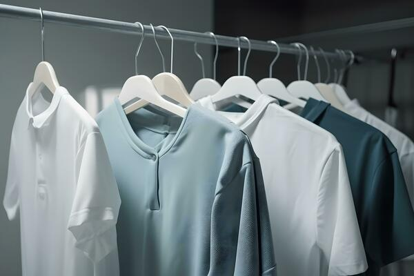

The Science Behind Dry Cleaning
Dry cleaning uses a chemical solvent other than water to clean clothes. The most common solvent used is perchloroethylene, which effectively removes stains and dirt without damaging delicate fabrics. The process involves immersing the clothes in the solvent, agitating them, and then extracting the solvent along with the dirt.

History of Laundry: From Ancient Times to Today
Did you know that laundry dates back to ancient civilizations? The earliest evidence of laundry practices can be found in ancient Egypt, where people used soda ash to clean their garments. Over the centuries, laundry methods evolved from using hands and simple tools to the invention of washing machines and modern detergents.

Eco-Friendly Dry Cleaning: What You Need to Know
With increasing awareness about environmental issues, many dry cleaning businesses are now offering eco-friendly options. These methods use solvents that are less harmful to the environment and focus on reducing waste. Some places also use biodegradable detergents and energy-efficient machines to minimize their carbon footprint.

Tips for Maintaining Your Clothes
Proper care can extend the life of your clothes significantly. Always check the care labels before washing or dry cleaning. For everyday maintenance, consider spot cleaning stains immediately, using a gentle cycle for machine washing, and storing clothes in a cool, dry place to prevent damage.
.jpg)